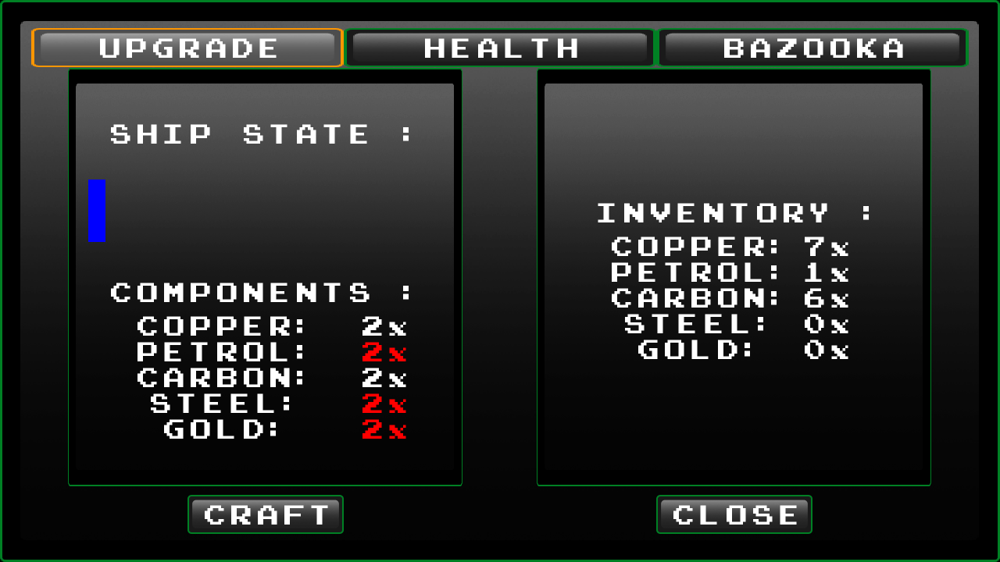
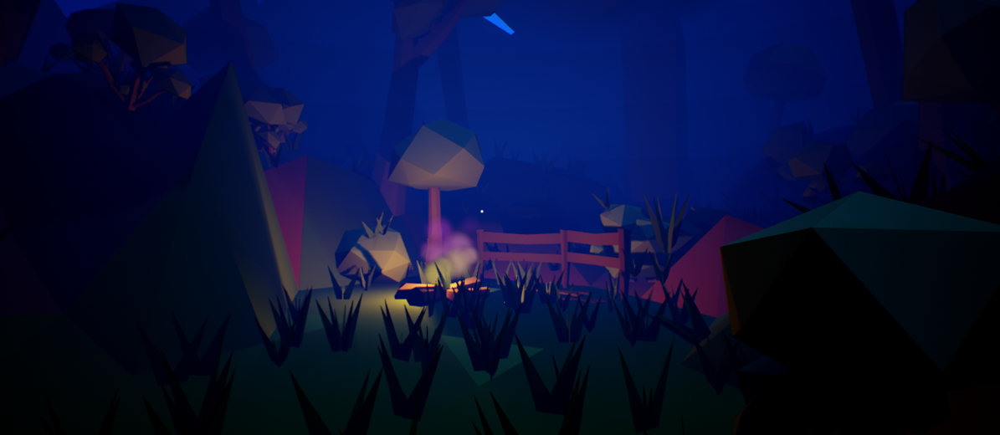
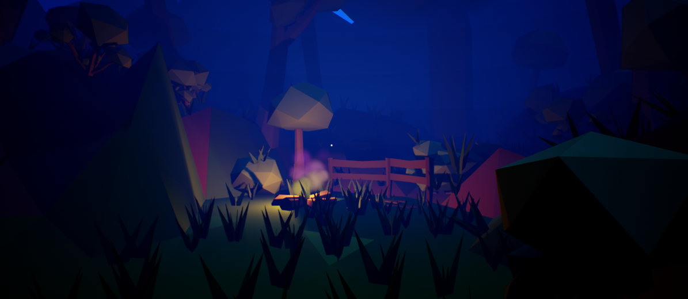

Software developpement :
I possess a strong foundation in algorithmic thinking and general programming, which enables me to efficiently tackle complex challenges in software development. I am well-versed in the principal methods of data structuring and memory resource management. My knowledge extends to implementing renowned algorithms such as binary search and genetic algorithms, which are essential for optimizing performance and solving intricate problems. Additionally, I am proficient in working with asynchronous code and multithreading. This proficiency allows me to develop software that is not only effective but also scalable and responsive, optimizing computational resources and enhancing user experience in applications that require concurrent processing or handling multiple tasks simultaneously.


GUI design :
I have gained some experience in the field of graphic design and the development of intuitive graphical interfaces (GUI) for applications. This experience has equipped me with the skills to create visually appealing and user-friendly interfaces, enhancing the overall user experience. I am familiar with several notable frameworks, including JavaFX and Tkinter, which have been instrumental in my ability to design and implement effective UI solutions. My knowledge in these frameworks enables me to bring a mix of aesthetic appeal and functional design to the applications I work on, ensuring they are not only efficient but also engaging for the user.
Game developpement :
My most profound area of expertise lies in video game development, where I have demonstrated significant competence and in-depth knowledge. I possess extensive experience with the Unreal Engine, a leading game development platform, and I am highly skilled in utilizing its various modules, including UMG, Behavior Tree, Slate, Navigation System, Niagara, Mass, and Lumens. These tools have enabled me to create immersive and beautifull gaming environments with advanced features and functionalities. In addition to Unreal Engine, I also have experience with the LibGDX framework and SDL2, which further broadens my capabilities in game development. My proficiency extends to game design principles, allowing me to not only technically engineer games but also thoughtfully craft engaging gameplay experiences.
 
